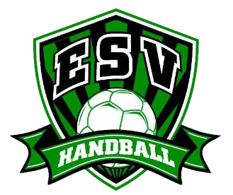
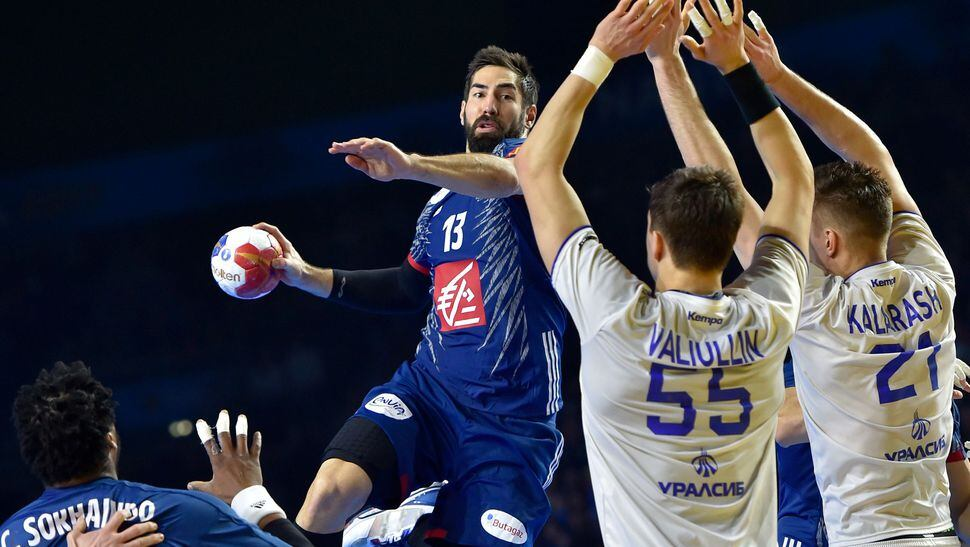

Sports
sports_handball
Je suis un athlète passionné qui a fait vibrer les terrains de handball pendant 4 ans au sein de l'Entente Sportive de Vitry (ESV) à Vitry-Sur-Seine, évoluant fièrement au niveau régional.
Parcours Exceptionnel
Ma saga handballistique a débuté en dernière année des -13G, et a atteint son apogée en dernière année des -18G, marquant chaque année de mon empreinte.
En tant que gardien de but hors pair, j'ai contribué de manière significative à l'équipe, apportant ma détermination, ma rigueur et mon sérieux à chaque match.
Les Années de Formation
Mes années junior ont été une école de vie sportive, me forgeant en tant qu'individu déterminé et résilient. Le handball a été bien plus qu'un simple sport pour moi.
Il m'a inculqué des valeurs telles que le dépassement de soi, la volonté inébranlable et le travail d'équipe.
Réalisations et Contributions
Au fil de ces années, j'ai participé à des compétitions enflammées, contribuant activement aux succès de l'ESV.
Mon engagement sur le terrain était une manifestation de ma passion pour le handball et mon désir constant de m'améliorer.
Malheureusement, ma carrière a été interrompue en raison d'une blessure, mettant fin prématurément à cette belle aventure.
Une Vision d'Excellence
Aujourd'hui, je porte avec fierté les enseignements de ces années enrichissantes. Ma vision du sport va au-delà du simple divertissement ; elle embrasse l'excellence, la discipline et la persévérance.
Déterminé pour l'Avenir
En dehors du terrain, je reste déterminé à poursuivre l'excellence dans tous les aspects de ma vie. Mon parcours dans le handball n'est que le début d'une aventure où je m'efforce constamment de repousser mes limites.
Aujourd’hui, j’ai décidé d’encore une fois me surpasser et de surmonter ma blessure. Pour faire ça, j’ai repris le sport et je vais activement à la salle de sport pour m’entretenir et sortir de ma zone de confort.